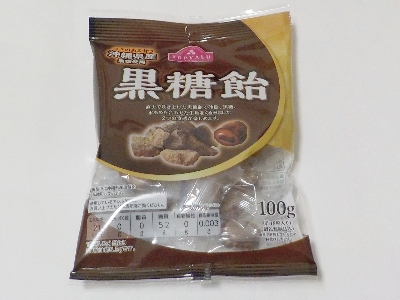
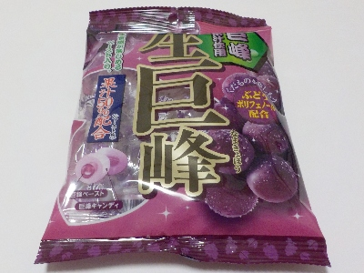

愛知県小牧市小木1丁目48
2025/03/18

100g入って108円プラス税で安かったです。シンプルな飴が低価格であるのはうれしいですね。
私はノンシュガーとか栄養強化的なハイテクで高価なものはあまり好きじゃないです。
更新日 : 2024/12/14

生梅飴はよく食べるんですが、巨峰は初めて食べました。
飴なんですけど巨峰ゼリーや巨峰寒天みたいな味がするなと思いました。砂糖甘さも美味しいし巨峰味も美味しいです。
私は生梅飴の方が好きかな。
更新日 : 2023/05/28
サイダー味、みかん味、コーラ味、マスカット味、すもも味が入っていました。
あめ玉が大きいので、ちょっとなめにくいです。外でなめるとほっぺがふくらんだり、口の動きが不自然になるので自宅でなめることにしまた。
パッケージに「駄菓子屋さん」ってあるように、砂糖の感じが強い昔風の飴です。普通に美味しい。
私のオススメはコーラ味です。
更新日 : 2023/03/23

ソフトキャンディーを久しぶりに食べました。
柔らかいですね。口の中の水分で溶けて、あまり時間が掛からないうちになくなりました。
速く食べ終わるので、続けてもう1個食べてしまいます。
美味しいので沢山食べてもその分いい思いをしているので、いいかなと思いながら食べています。
更新日 : 2022/09/07

梅キャンディー第一位です。透明な砂糖の飴の中に梅干し味のペーストが入っています。
甘辛くて美味しいです。なのでよく買っています。
お店屋さんの棚に新商品で興味を引くものがなかったら、この生梅飴を買います。
2022/09/07 よく買う飴です。
2024/06/14 気温が高くなってきたので塩分補給で買うようにしました。
【おいしいものを食べよう。】【たくさん寝よう。】
【ソロ活をしよう!】【季節感のあることをしよう。】【動画視聴はほどほどに。】【当サイトの全てのコンテンツは無断転載禁止です。】